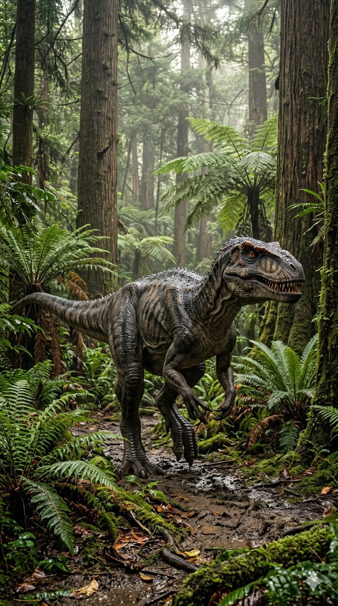
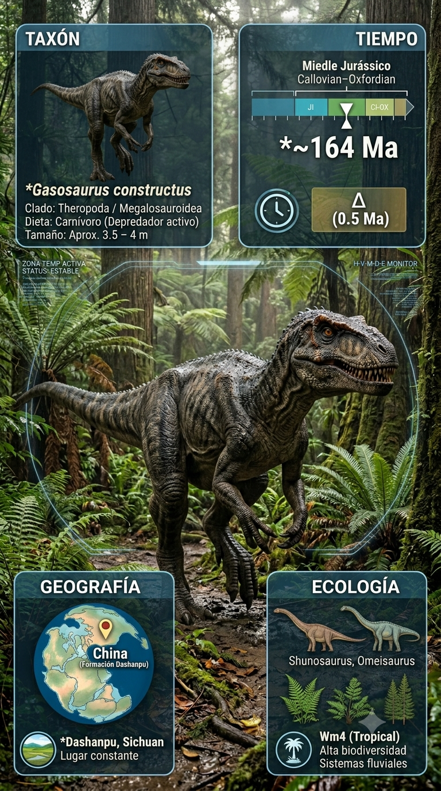
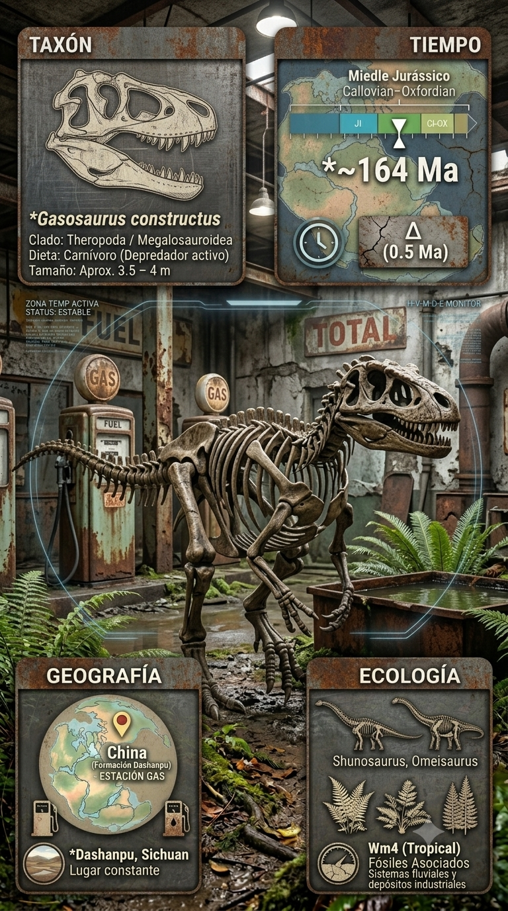
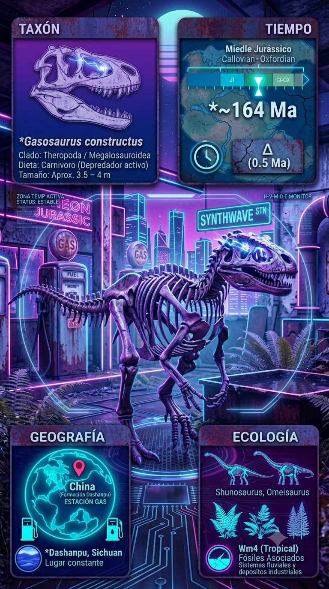

Paleoficha de Gasosaurus




Periodo: Jurásico Medio
Edad: Hace aproximadamente 165 millones de años.
Dieta: Carnívoro activo.
Distribución: Formación Dashanpu, Sichuan (China).
TAXÓN:
Gasosaurus constructus
CLADO: Tetanurae (dinosaurio terópodo basal)
DIETA: Carnívoro activo
TAMAÑO: Aproximadamente 3,5 a 4 metros de longitud
LOCOMOCIÓN: Bípeda, cursorial (adaptado para correr).
TIEMPO:
Jurásico Medio (Bajociano/Bathoniano), aproximadamente 165 millones de años.
GEOGRAFÍA:
Formación Dashanpu, Sichuan (China). Cuenca sedimentaria situada en la parte oriental de Pangea. Ambiente paleoecológico de llanuras fluviales cálidas con abundante vegetación y sistemas de canales.
ECOLOGÍA:
Bosques de coníferas, ginkgos y cícadas. Compartía el ecosistema con saurópodos como Shunosaurus y Omeisaurus, además del estegosáurido Huayangosaurus. Ocupaba el nicho de depredador de nivel intermedio, especializado en capturar dinosaurios juveniles y pequeños herbívoros como Agilisaurus. Competía con otros terópodos locales.
CLIMA:
Wm4 (Tropical). Cálido, húmedo y con elevada productividad biológica.
ESTADO ECOLÓGICO:
Estable. Representa un tetanuro temprano clave para comprender la evolución de los grandes depredadores jurásicos.
Vídeo PalEntropía:
▶ Ver Short en YouTube